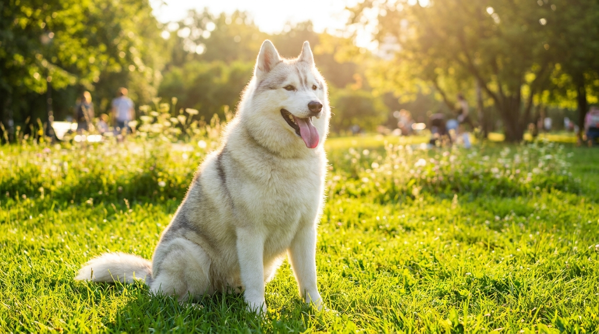

С наступлением жары тысячи хозяев везут своих хаски, шпицев и овчарок в груминг-салон с запросом «постричь налысо — ей же жарко». Грумеры объясняют, почему этого делать не нужно. Хозяева не верят. Разбираемся в физиологии: как собака на самом деле переносит жару, что делает шерсть и кому стрижка показана, а кому нет.
🐾 Первая помощь — всегда под рукой
AnimaLife подскажет, что делать в тревожной ситуации с питомцем ещё до визита к врачу. Откройте в один тап.
Собака — не человек. У людей около 2 миллионов потовых желёз по всему телу, и потоотделение — главный механизм охлаждения. У собак функциональные потовые железы находятся только на подушечках лап и на носу. Площадь этих зон ничтожна по сравнению с поверхностью тела.
Основной механизм терморегуляции у собаки — тепловая одышка (пантинг). Собака дышит с открытой пастью и высунутым языком: воздух проходит через влажные поверхности ротовой полости, носоглотки и верхних дыхательных путей, испаряя влагу и унося тепло. Это эффективная система, работающая независимо от того, острижена собака или нет.
Дополнительно: расширение кровеносных сосудов в коже ушей и носа — тепло рассеивается через эти зоны. Смена поведения: собака сама ищет тень, прохладный пол, водоёмы.
Вывод: стрижка шерсти не влияет на основной механизм охлаждения у собак. Тепловая одышка работает через дыхательную систему, а не через кожу.
Породы с двойной шерстью — хаски, самоед, маламут, шпиц, чау-чау, лабрадор, золотистый ретривер, немецкая овчарка, бордер-колли, бернский зенненхунд — имеют два слоя:
Воздушная прослойка под шерстью работает как теплоизоляция в обе стороны: она не только удерживает тепло зимой, но и не пропускает жару снаружи внутрь летом. Это принцип бедуинской одежды — арабы в пустыне носят длинные свободные одеяния именно потому, что ткань защищает от перегрева, а не усиливает его.
Дополнительно: остевая шерсть отражает часть солнечного излучения (УФ), защищая кожу от солнечных ожогов. У собак с тёмной кожей и светлой шерстью — особенно актуально.
Когда грумер состригает шерсть хаски или шпица почти до кожи, происходят три вещи:
1. Термоизоляция нарушается. Кожа собаки оказывается без защитного слоя. Солнечные лучи и горячий воздух воздействуют на кожу напрямую. Собака не «охлаждается» — она начинает перегреваться быстрее, чем до стрижки.
2. Риск солнечных ожогов. Кожа собак, особенно светлых пород, не адаптирована к прямому солнечному воздействию. Солнечный ожог у состриженной белой собаки — реальная и не редкая проблема. Особенно уязвимы: самоеды, белые шпицы, бишон-фризе.
3. Post-clipping alopecia. Это синдром нарушения отрастания шерсти после стрижки, характерный именно для пород с двойной шерстью. После бритья подшёрсток и остевая шерсть могут расти не одновременно, в неправильном соотношении — в результате шерсть отрастает неравномерными «клоками», теряет нормальную текстуру и функциональность. В некоторых случаях шерсть не восстанавливается до нормального состояния в течение 1-2 лет, а иногда — никогда.
Породы особого риска: шпиц, хаски, самоед, маламут, померанский шпиц. Для них рекомендации ветеринарных дерматологов однозначны: не стричь короче 2-3 сантиметров от кожи.
Важно понимать: проблема не в стрижке как таковой, а в стрижке неправильных пород. Существует большая группа собак, которым регулярная стрижка физиологически необходима:
Общий принцип: однослойная шерсть без подшёрстка — стрижка нужна и полезна. Двойная шерсть с подшёрстком — стрижка вредна, нужно вычёсывание.
Для пород с двойной шерстью летом нужно не стричь, а активно вычёсывать подшёрсток. Летний подшёрсток «выпадает» — и если его не вычёсывать регулярно, он сваливается и перекрывает воздухообмен. Вот тогда собаке действительно жарко.
Инструменты для работы с подшёрстком:
Регулярное вычёсывание весной и летом (особенно в период линьки) — это лучшее, что хозяин может сделать для комфорта собаки в жару. Это обеспечивает нормальный воздухообмен в шерсти и убирает лишний «теплоизолятор», не разрушая защитный слой остевой шерсти.
Если шерсть не решает проблему жары — что решает? Вот методы с доказанной эффективностью:
Тепловой удар у собаки — смертельно опасное состояние. Погибель может наступить за 15-20 минут. Признаки:
Первая помощь: немедленно убрать из жары в тень/прохладное помещение, облить прохладной (не ледяной!) водой лапы, живот, шею, обмахивать, дать пить. И немедленно везти к ветеринару — тепловой удар лечится только в клинике с капельницами и мониторингом.
🐾 Экономьте на лишних визитах к врачу
Сначала спросите AI-ветеринара в AnimaLife — часто этого достаточно, чтобы понять, нужен ли визит к врачу.
Конец весны и начало лета — пик сезонной линьки для большинства пород с двойной шерстью. Хаски, лабрадоры, овчарки «цветут» — шерсть выпадает клоками. Это нормальный физиологический процесс, не болезнь. Задача хозяина — помочь шерсти выйти, а не остричь её.
Профессиональный десхеддинг в груминг-салоне — это специализированная процедура: продувка, вычёсывание специальными инструментами, возможно купание с шампунями, усиливающими линьку (например, линейка IV SAN для десхеддинга). За одну сессию опытный грумер может вычесать из крупного хаски или лабрадора 500-700 граммов мёртвого подшёрстка. После такой процедуры шерсть лежит правильно, воздухообмен восстанавливается, и собаке реально становится легче в жару — без всяких стрижек.
Частота десхеддинга: для активно линяющих пород — 1-2 раза в год (весна и осень). Дома между сессиями — еженедельное вычёсывание фурминатором или пуходёркой.
Пока хозяин думает о стрижке шерсти, настоящая летняя опасность нередко остаётся незамеченной — горячий асфальт. При температуре воздуха 32-35°C асфальт нагревается до 60-70°C. Это температура, при которой через 60 секунд контакта возникает ожог кожи.
Правило: если вы не можете держать тыльную сторону ладони на асфальте 7 секунд — значит, собаке там стоять нельзя. В жаркие дни прогулки только по траве, грунту, в тени. Ранним утром и поздним вечером асфальт успевает остыть.
Признаки ожога подушечек лап: хромота, поджимание лап, вылизывание, покраснение, волдыри на подушечках. При ожоге — промыть холодной водой, закрыть стерильной повязкой, к ветеринару.
Защитные ботинки для собак (например, Ruffwear Grip Trex) решают проблему горячего асфальта полностью, но приучение к ним требует времени. Защитный воск для лап (Musher's Secret, Trixie Paw Care) создаёт барьер и снижает теплопередачу — менее эффективен, но проще в применении.
Если сомневаетесь — спросите у профессионального грумера с сертификацией, а не у того, кто просто «стрижёт собак». Хороший грумер объяснит физиологию шерсти вашей породы и предложит правильный уход. Принцип «летом всех под машинку» — не экспертиза, а дешёвая услуга, которая может обойтись дорого для здоровья собаки.
Лето — сезон повышенной активности клещей, комаров и слепней. Шерсть обеспечивает некоторую механическую защиту кожи от укусов, особенно остевая шерсть двойного покрова. Состриженная кожа оказывается более уязвимой для укусов насекомых — ещё один аргумент против бритья пород с подшёрстком.
Для защиты от клещей и блох летом важна регулярная обработка: спот-он капли (Bravecto, Frontline, Simparica, Nexgard), ошейники (Seresto) или оральные препараты. Ни одно из этих средств не конфликтует с наличием густой шерсти — они всасываются через кожу и работают системно или распределяются по кожному жиру по всей поверхности тела. Стрижка ради «лучшего действия» капель — распространённое, но ошибочное убеждение.
После каждой прогулки в высокой траве или лесу осматривайте собаку на клещей — особенно тщательно в подмышечных впадинах, паху, за ушами, между пальцами. При длинной шерсти это сложнее, но выполнимо при систематическом подходе.
Многие хозяева тревожатся при виде активно дышащей с открытой пастью собаки — и везут её стричь «чтобы не страдала». Важно понять разницу между нормальной тепловой одышкой и реальным перегревом.
Нормально в жаркий день: собака дышит с открытой пастью после прогулки, язык высунут, собака ищет тень и прохладную поверхность, пьёт воду. Через 10-15 минут в прохладе приходит в норму — дыхание успокаивается, интерес к среде восстанавливается.
Признаки реального перегрева: одышка не проходит даже в тени и прохладе; слюна густая, пенистая; десны ярко-красные или синеватые; собака не реагирует на кличку; шатается или падает; рвота, понос. Это экстренная ситуация.
Профилактика лучше реанимации: не гуляйте в жару, обеспечьте воду, тень, прохладную поверхность — и стрижка не понадобится ни для комфорта, ни для здоровья большинства пород.